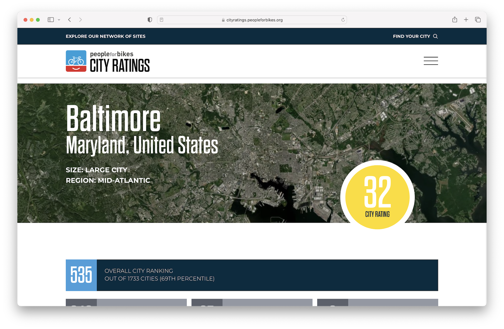
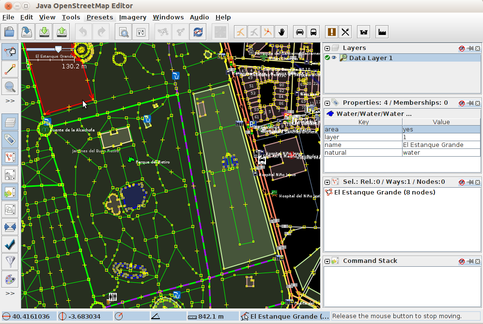
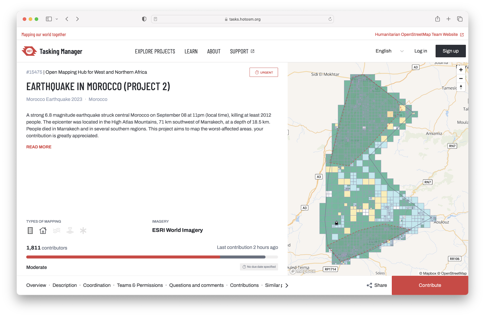
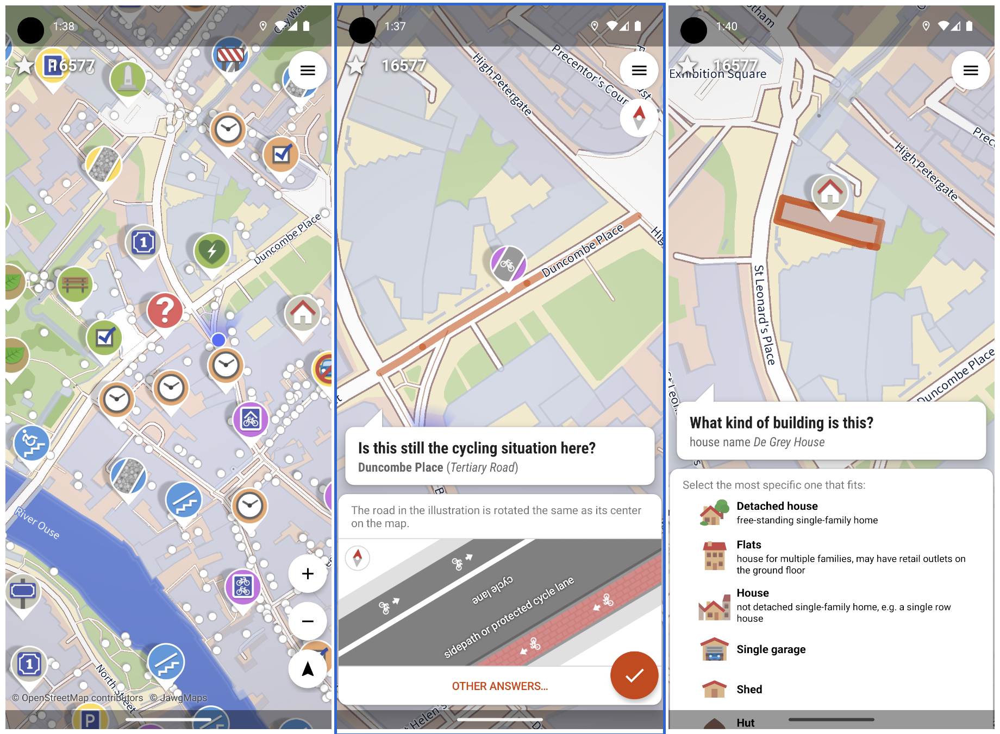
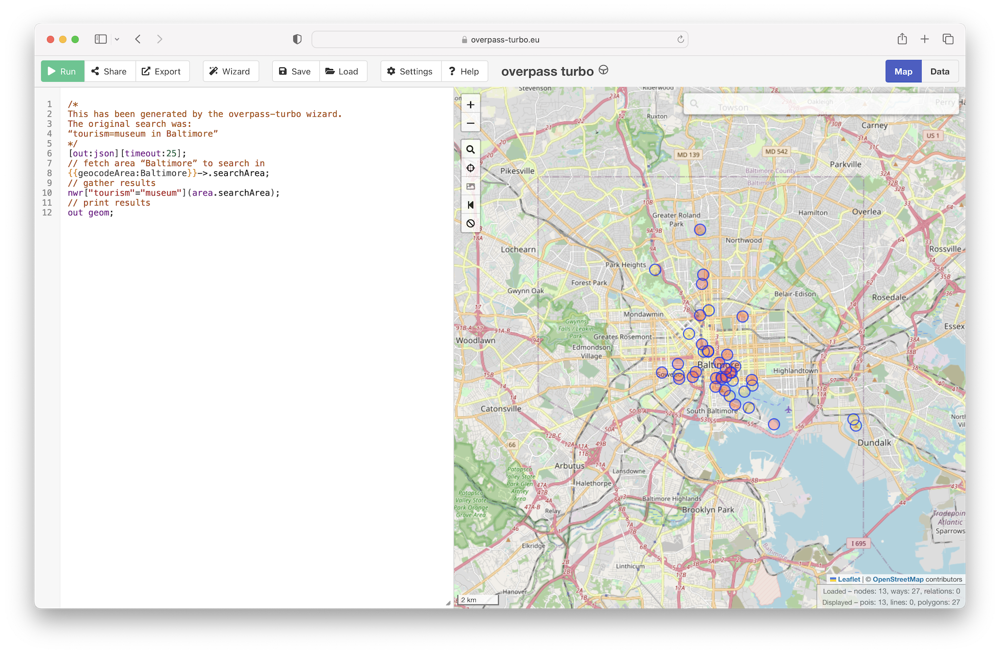
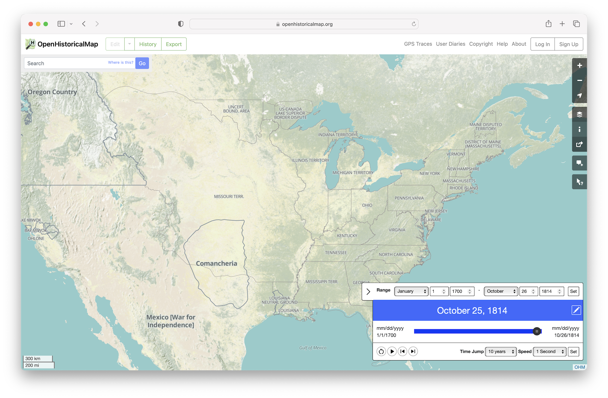

Editing OpenStreetMap and exploring OpenStreetMap data with the {osmdata} package
Session 9
2024-10-23
1 Credit
These slides on OpenStreetMap and exploring OSM data with the {osmdata} package are based on a March 10, 2020 presentation by Jonathan Dandois for MaptimeBmore and the CCBC GIS Capstone.
2 Overview
- What is OpenStreetMap?
- How do you contribute to OpenStreetMap?
- Practice: Editing with the iD Editor
- How do you download data from OpenStreetMap?
- Practice: Downloading data with
{osmdata}
3 What is OpenStreetMap?
Created in 2004 in response to restrictive data sharing by the UK Ordnance Survey
Grew as the “Wikipedia of maps” in response to increasing cost of commercial services like Google Maps after 2011 price hikes
4 Using OpenStreetMap
OpenStreetMap isn’t just a map—it is a “global geodatabase of everything and anything that people add to the map”:
- roads, crosswalks, speed bumps, stop lights
- restaurants, daycares, playgrounds, cannons
- forests, central business districts, boundaries
- land cover, gravestones, utility ROWs
5 Who is using OpenStreetMap?
Individual users, developers, and researchers are using OSM data for:
- Apps and websites
- Games
- Advocacy and planning
Microsoft Flight Simulator
People for Bikes City Ratings
The Bike Network Analysis (BNA) is a data analysis tool that measures how well bike networks connect people with the places they want to go and is used for the PeopleForBikes 2023 City Ratings. The methodology is described online and the PeopleForBikes · GitHub includes the full code for the analysis.
6 Contributing to Open Street Map
Different editors have different reasons for contributing and contribute in different ways:
- Individuals
- Public agencies
- Non-profit organizations
- Corporations
7 Tracing and digitizing imagery
Most editors for OpenStreetMap use high-resolution aerial, satellite, and drone-based imagery to trace or digitize:
- POIs, addresses (points)
- Roads, sidewalks, paths (lines)
- School areas, central business districts, parks, lakes, playgrounds (polygons)
Learn more in Getting Started with OSM.
8 What is “good” editing?
Learn more in the Good practice section of the OpenStreetMap Wiki.
Contributing with the iD Editor
 Learn how to use the iD Editor.
Learn how to use the iD Editor.
Contributing with the JOSM Editor
Try out JOSM—the desktop editor for OpenStreetMap.
Contributing with the Humanitarian OpenStreetMap Tasking Manager
 Try the HOT Tasking Manager.
Contributing with StreetComplete
Learn about StreetComplete.
9 Practice editing data with the iD Editor
10 Downloading data with overpass turbo
 overpass turbo, a web-based data filtering tool for OpenStreetMap, can run Overpass API queries and analyze the resulting OSM data interactively on a map.
11 Open Historical Map
12 Downloading data with {osmdata}
osmdatais an R package for accessing the data underlying OpenStreetMap (OSM), delivered via the Overpass API.- The package is designed to allow access to small-to-medium-sized OSM datasets (see
osmextractfor an approach for reading-in bulk OSM data extracts).
13 Practice downloading data with {osmdata}
14 Resources
QuickOSM: QGIS Plugin
OSMQuery: ArcMap and Pro Python toolbox
riccardoklinger/OSMquery: Query OSM data and add results to your ArcGIS project